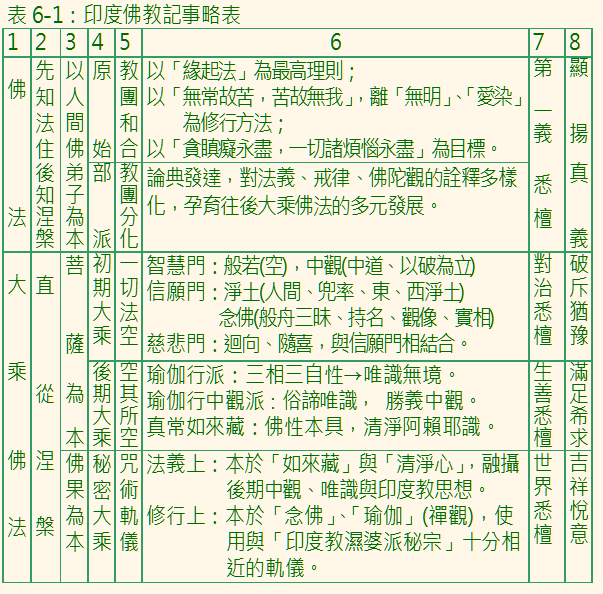

抉擇
佛教的教義，在印度經近二千年的演變，如果拿在源頭的《雜經》，與在末端的「無上瑜伽怛特羅」教典來一起讀，可能就會有蠻多的迷惑，甚至會弄不清楚佛教到底要教導我們的是什麼。世事的演變，總是有其演變的條件。印度佛教思想的演變，也沒有離開這樣的法則。透過對史實資料的把握，尋找其演變的脈絡，我們會知道，該如何抉擇。
印順法師在他的《原始佛教聖典之集成》中，引《大經》賣牛乳的比喻（第八七九頁），以及在〈契理契機的人間佛教〉（《華雨集（四）》）中，以覺音論師的「四部注釋名稱」，比照龍樹的「四悉檀」，來判攝佛教教典（教典表現著思想）的發展（第三０頁）。由這樣的說明，我們可以理解到，從《雜阿含經》，尤其是其中的〈〉部分，應該最容易把握到佛法的特質。印順法師的這個判攝，與當今國外的佛教研究學者，以《阿含經》為佛教原始聖典的結論相合，而且更為細緻。對願意將佛法投入生命的人來說，姑且不論是相信，或是質疑這樣的判攝，就以求真求實，親自體會的理由來說，嘗試著去探索《雜阿含經》；尤其是〈修多羅〉部分的內涵與精神，或者，更進一步地從中去整理修行方法，應該都是很值得去做的事。
目前所稱的《雜阿含經》，或《相應部》，是遠在約二千五百年前，入滅後次年的「第一次結集」中，就完成其雛形的。而現今所能讀到的，包括其它三部《阿含經》或《尼柯耶》，都是僧團分裂後，屬於各部派的誦本。也就是說，有可能會雜入屬於各部派後起思想的（這是印度典籍常見的例子 ─ 古籍不斷地被後人增添）。所幸，從現存的其它經典中，有足夠的資料，瞭解到漢譯《雜阿含經》是說一切有部的誦本，而以巴利語記錄的《相應部》，是赤銅鍱部的誦本。透過不同部派誦本的比對，發現《雜阿含經》，尤其〈修多羅〉部分，與《相應部》的重疊性很高。這些重疊的部分，可以推斷為僧團未分裂前，共同誦本的部分，應該是更接近於佛陀教說的原始風貌的。
今天，我們回顧佛教發展的歷史，之所以可以將之分為「佛法」、「大乘佛法」、「秘密大乘佛法」等三期，或更細地分為「原始佛教」、「部派佛教」、「初期大乘佛教」、「後期大乘佛教」、「秘密大乘佛教」等五期，實在是因為各期在思想上，確實有明顯可辨的差異性存在的緣故。假如我們以最簡單的方式，大概可以摘要如表六之一：
表6-1：印度佛教發展略表

從印度佛教思想史的演變中，有兩個現象值得警惕：
其一，是佛教以人為本的人間性格，隨著演變而逐漸消逝。
其二，是「有我」的思想，以各種不同的包裝，愈到後期愈強勢。
綜合來說，就是神教化的傾向，愈來愈濃厚；佛教與其它宗教的差異，愈來愈模糊。
在《雜阿含經》中，我們讀到的是，佛陀及佛陀弟子們日常生活的描述，以及相互間的問答釋疑。而有關天、阿修羅、天神、魔等的經，大都出現在屬於「衹夜」的「八眾誦」中。在經典的記載中，他們若不是來讚嘆佛法，就是來向佛陀、佛弟子們學習佛法的。也就是說，在佛教裡，他們都不是居於主角的地位，佛陀以及佛陀弟子們，都是他們尊敬與學習的對象。然而，在大乘經典中，來自他方世界的大菩薩多起來了，參與法會的他方世界菩薩數量，也超乎人間的現實經驗。佛法所關涉的對象與範圍爆展開來了，淡化了早先以「人間」（我們的這個社會），以及「人」（我們）為主要關懷的精神。引起這個轉變的因素，可能不止一端，如對佛陀的懷念，以及經由假想觀、勝解觀而來的禪定經驗等。然而，在種種理由中，揮之不去的，是那神化色彩的影子。到了秘密大乘佛教的時代，天神已多為佛弟子修行的榜樣，天界的地位儼然凌駕於人間之上。佛教的人間樸實性，與可經驗性的親切精神，已明顯地淡薄了。
「」，是佛教的一個特色與重要標竿，它與「無常」、「寂滅」合稱為佛教的「三法印」。從「三法印」中，我們還能理解到，其中的共通法則，就是「緣起法」。「緣起法」既通於世俗，也通於解脫涅槃。可以說，這是「放諸四海皆準」的普遍性真理，而沒有任何時空下的例外。所謂「緣起法」，就是「此有故彼有，此無故彼無」，「有因有緣世間集，有因有緣世間滅」。在這樣的理則判攝下，宇宙的創造神不存在；最後的審判不存在；常恆不變的主體不存在；本來清淨的真我不存在；本初佛也不存在。「緣起法」的主張，是佛教和其它宗教最明顯的差異，也是佛法的特質與第一義諦。「緣起法」表現在行為的實踐上，就是「無我」，就是「貪、瞋、癡永盡，一切永盡」，就是解脫。然而，我們凡夫最難接受，最不易實踐的，正是這一點。所謂「神化」，就是指主張「有我」：觀念上，總需要有個不變的主體來依靠。那個依靠，在內，就是不受生死輪迴影響的實在不變自我，或說隱藏在生死煩惱後面的清淨真實我。在外，就是創造神與第一因。行為上，就是以自我為中心，看不到「此有故彼有，此滅故彼滅」的主宰欲。延伸出來的，就是「順我貪」、「逆我瞋」的情緒表現。從印度佛教思想的演變中，可以感受到，人們要澈底放棄「有我」的觀念，撤守「我」的最後防線，是多麼的難啊！
在部派佛教時代，「我」的思想，在解說「業報流轉」的需求下，隱隱然地浮現出來。到了以「空其所空，有其所有」為主要思想的後期大乘，那個「有」的含義，終究是違反緣起法，而通於「我」的內涵的。尤其以藏說為主的「真常唯心」思想，以及秘密大乘佛教，那更是公然地以「我」為體証的諦理了。
佛法的特質，是在佛教的發展中，點點滴滴地流失的。檢討這個問題，我們不得不面對與第一諦，或者說契理與契機、「求真」與「適今」的反省。為了有效地宏揚與一般人知見與習性不同的佛法；比如說無我，說緣起，說去貪、瞋、癡等，先依眾生的不同需求；應眾生各個不同的習性，而用種種的法，是必要的，這是契機。然而，如果在契機中，了契理；在擁抱群眾中，沒有能夠影響群眾，走向放棄「有我」，以及走向去除貪、瞋、癡的解脫道，那麼，這樣的契機，這樣的方便，與何異，與佛法何干？從整個印度佛教思想史的演變，我們看到的是，契機與方便（適應）的蓬勃發展，契理與第一義諦的凋零萎縮。如果說契理與契機，在互相衝突中，難以兼得時，放棄契理，無異宣告與佛法無關，終究還是失去為介紹佛法而契機的最初用意。
舉例來說，「」法門，是自初期大乘以來，最具有代表性的方便教說。現在，讓我們來比對其相關的源流：《雜阿含五五０ 經》所說的「六念法」。就契機的目的來說，兩者是相同的，但就契理來說，《雜阿含經》的立場，就值得我們學習：「六念法」除了照顧人們情感的需求外，在每一念的末尾，都不忘了要求，要依每一念，來遠離貪、瞋、癡的煩惱。從這樣的比對，所獲得的啟示是：任何一個方便法，只有在引人契入佛法的第一義諦時，才有意義。
就學習者的角度來說，緣起法是佛法一個重要的判攝標準。凡是與緣起法相違背的思想與觀點，只有一個選擇，那就是儘早揚棄。凡是源自於「有我」主宰欲的言行，也只有一個選擇，那是隨份隨力的修正。
個人繼「妙雲集」後，閱讀印順法師有關印度佛教思想的著作，得到了有如「初見曙光」的踴動，確認了自己永不離佛法的信心。自問沒有「聖教衰，不忍眾生苦」的偉大心量，有的只是「野人獻曝」的心情與真誠，提貢自己的抉擇與法喜，以供同修們的參考，並期待們的指正。
思 考：
一、您認為瞭解「印度佛教思想史」對您學佛有什麼助益嗎？
二、您認為《阿含經》在所有佛經中，應如何定位？
三、您如果發現不同的經典有不同的說法時，您如何選擇？
四、您如何看待佛教中的不同教派？
五、您認為「大乘」是佛說嗎？為什麼？
六、您對「大乘」、「小乘」的對立，有何看法？